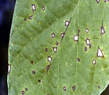
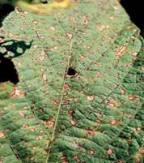

| Home |
| SOYBEAN |
| Major Diseases |
| 1. Dry root rot |
| 2. Wilt |
| 3. Leaf Spot |
| 4. Mosai |
| Questions |
| Download Notes |
SOYBEAN LEAF SPOT DISEASE
Leaf spot - Cercospora sojana
Symptoms
Light to dark gray or brown areas varying from specks to large blotches appear on seeds. The disease primarily affects foliage, but, stems, pods and seeds may also be infected. Leaf lesions are circular or angular, at first brown then light brown to ash grey with dark margins. The leaf spot may coalesce to form larger spots. When lesions are numerous the leaves wither and drop prematurely. Lesions on pods are circular to elongate, light sunken and reddish brown.
|  |  |
Symptoms |
|
Favourable conditions
- Fungus survives in infected seeds and in debris.
- Warm, humid weather favor disease incidence
Management
- Use resistant varieties.
- Use healthy or certified seeds.
- Rotate soybean with cereals.
- Completely remove plant residue by clean ploughing the field soon after harvest.
- Destroy last years infected stubble.
- Seed treatment with Thiram + Carbendazium (1:1) @ 2g/kg seed.
- Spray Mancozeb @ 2g/L or Carbenzadium (500 mg/L).